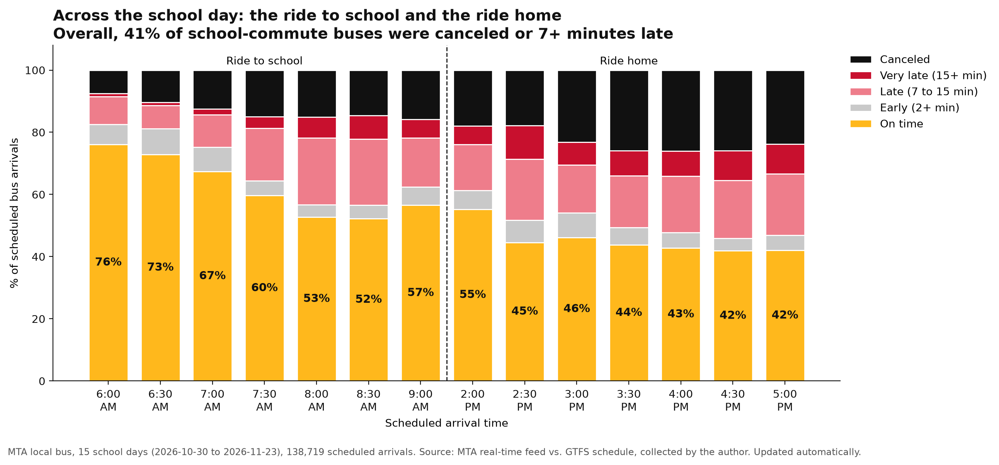
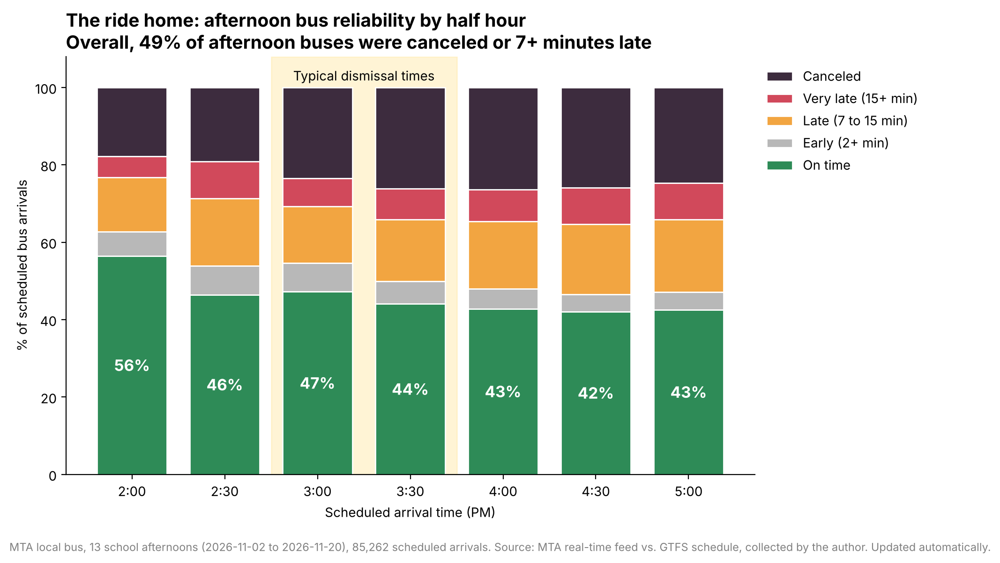

Delays and cancellations were more common in the afternoon
Across 14 school days, 30% of morning arrivals with a known outcome and 48% of afternoon arrivals with a known outcome were canceled or more than 7 minutes late. From 8:00 to 9:00 a.m., 54% of morning arrivals with a known outcome were on time.
How arrivals with a known outcome turned out
- Loading…
The charts show outcomes by scheduled arrival time. The chart and headline calculations include recorded arrivals and cancellations flagged by MTA.

How morning arrivals with a known outcome turned out
- Loading…
The on-time share fell from 75% in the 6:00 a.m. half-hour to 54% between 8:00 and 9:00 a.m.

How afternoon arrivals with a known outcome turned out
- Loading…
The on-time share fell from 56% in the 2:00 p.m. half-hour to 46% between 3:00 and 4:00 p.m., when many students head home.

The charts and headline figures refresh as new commute data is processed.
Reliability by route and stop
Routes ranked by disruption rate
The default ranking uses the share of scheduled stop visits that were more than 15 minutes late, canceled, or had no real-time record. The table includes routes with at least 20 measured, canceled, or unrecorded stop visits. The on-time rate uses measured arrivals only.
| Loading… |
Stops with the highest drive-past rates
The table shows up to 25 stops with the highest drive-past rates among stops with at least 20 observed visits. A bus may pass a stop when nobody is waiting. The tracker cannot tell whether anyone was waiting to board.
| Loading… |
What unreliable service means for students
For students who rely on MTA buses, a delay or cancellation can mean missing the start of class or waiting longer after dismissal. The tracker measures bus service. It cannot measure how often students arrived late or how long they waited.
Data and methods
- The MTA publishes its bus schedule (GTFS) and a real-time feed with vehicle locations and trip updates (GTFS-Realtime). Both are listed on the MTA Developer Resources page.
- During monitored school commute windows, the tracker polls the real-time feed about every 30 seconds. The morning window runs from 6:00 to 9:30 a.m. and the afternoon window from 2:00 to 5:30 p.m., Baltimore time.
- The tracker saves arrival records for each monitored commute window. The data files are public on GitHub.
The analysis
The full analysis is in a commented Google Colab notebook. It loads the commute files, cleans them, calculates the headline results, and generates the charts.
Definitions
- On time
- The MTA's own standard: no more than 2 minutes early and no more than 7 minutes late, measured at scheduled timepoint stops.
- Early
- The bus left a timepoint more than 2 minutes ahead of schedule. A student who arrived on time could miss it.
- Late / very late
- Late means more than 7 minutes and up to 15 minutes after the scheduled time. Very late means more than 15 minutes after the scheduled time.
- Canceled
- The MTA's own feed marked the trip canceled.
- Couldn't confirm
- The bus trip was running but the tracker could not pin down when it reached the stop (a GPS gap, the trip stopped reporting, or an estimate fuzzier than 2 minutes). The strict count gives these no credit; the chart leaves them out.
- No record
- A scheduled trip with no real-time record. This can reflect a missed trip or a tracking gap. It counts against the bus in the strict count and the route disruption rate, and is left out of the charts and headline percentages.
- Drove past
- The tracker infers a drive-past from vehicle positions and speed near the stop when the feed shows no stop. Some visits, including slow passes, are classified as unclear.
Limitations
- The arrival analysis counts scheduled stop arrivals. A single trip can contribute multiple arrivals.
- The number of monitored mornings and afternoons can differ. Each chart shows the dates covered.
- The 8:00 to 9:00 a.m. and 3:00 to 4:00 p.m. intervals are reference windows. Actual start and dismissal times vary by school.
- The tracker covers general MTA bus service during school commute hours. It does not identify student riders or individual journeys.
- Arrival times are estimates from periodic feed reports. Their precision depends on the time between usable updates.
- The results cover the school days collected so far, not a full school year.